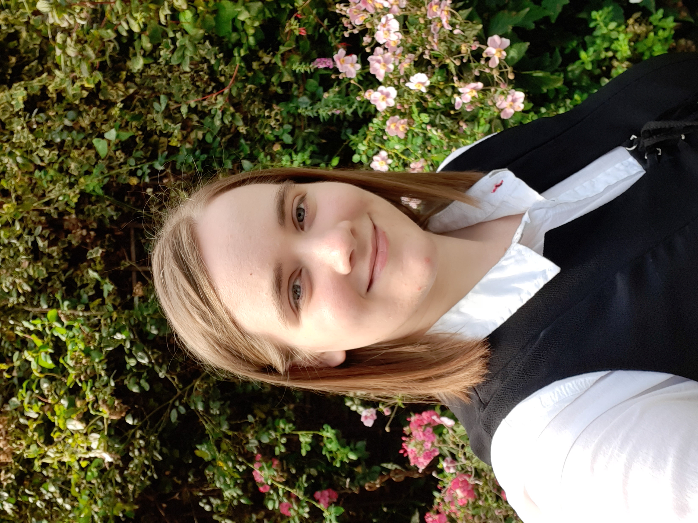

Welkom
Welkom iedereen op mijn klein en simpele website ik ben Charlotte De Schutter en ik heet u van harte welkom op mijn klein deeltje van het internet.
Deze website is een school opdracht met de bedoeling om mijzelf voortestellen aan de wereld en misschien mijn toekomstige werkgever. In deze website ga je verschillende informatie over mij vinden zoals mijn hobby’s en interesses maar ook mijn curriculum vitae ook bekend als een CV.
